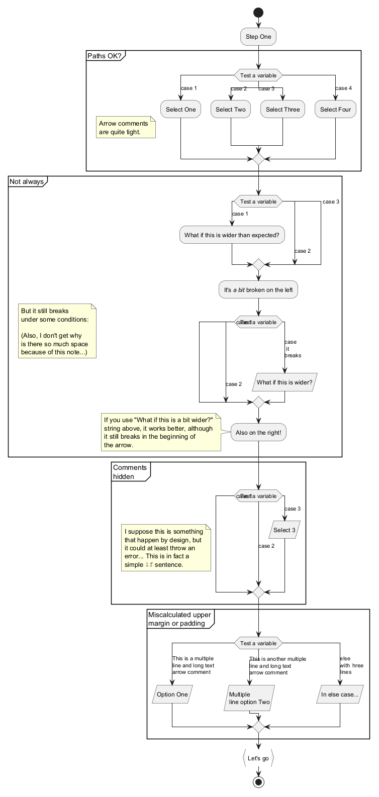

@startuml
start
:Step One;
partition "Paths OK?" {
note
Arrow comments
are quite tight.
end note
switch (Test a variable)
case (case 1)
:Select One;
case (case 2)
:Select Two;
case (case 3)
:Select Three;
case (case 4)
:Select Four;
endswitch
}
partition "Not always" {
note
But it still breaks
under some conditions:
(Also, I don't get why
is there so much space
because of this note...)
end note
switch (Test a variable)
case (case 1)
:What if this is wider than expected?;
case (case 2)
case (case 3)
endswitch
:It's //a bit// broken on the left;
switch (Test a variable)
case (case 1)
case (case 2)
case (case\n it \nbreaks)
:What if this is wider?; <<save>>
endswitch
:Also on the right!;
note
If you use "What if this is a bit wider?"
string above, it works better, although
it still breaks in the beginning of
the arrow.
end note
}
partition "Comments\nhidden" {
note
I suppose this is something
that happen by design, but
it could at least throw an
error... This is in fact a
simple ""if"" sentence.
end note
switch (Test a variable)
case (case 1)
case (case 2)
case (case 3)
:Select 3; <<save>>
endswitch
}
partition "Miscalculated upper\nmargin or padding" {
switch (Test a variable)
case (This is a multiple\nline and long text\narrow comment)
:Option One; <<save>>
case (This is another multiple\nline and long text\narrow comment)
:Multiple\nline option Two; <<save>>
case (else\nwith \three \nlines)
:In else case...; <<save>>
endswitch
}
:Let's go; <<continuous>>
stop
@enduml